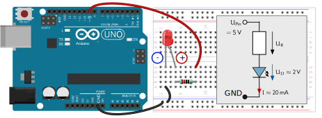

1. "Hallo Welt" oder eine blinkende LED
Das erste Programm (in der Arduinowelt Sktech genannt) lässt eine LED, die mit einem Vorwiderstand verbunden ist, regelmäßig blinken. An diesem Programmbeispiel lernen Sie den Grundaufbau eines Arduino-Sketches kennen.
Einfache Schaltung für eine LED
Bevor jedoch der Arduino programmiert werden kann, muss die LED mit einer entsprechenden Schaltung angeschlossen werden. Bei der Schaltung ist zu beachten, dass der lange Anschluss der LED der Plus-Pol und der kurze Anschluss der Minus-Pol ist. Wird die LED falsch angeschlossen, wird sie nicht leuchten. Außerdem gilt es zu beachten, dass der Strom durch die LED auf ca. 20 mA begrenzt wird. Ein größerer Strom könnte die LED zerstüren. Außerdem sollte die Ströme der einzelnen Arduino-Pins auf 20 mA begrenzt werden. Höhere Stromwerte können auch den Arduino zerstören. Zur Strombegrenzung wird ein Widerstand mit \( R=220\ \Omega \) verwendet. Die vollständige Schaltung ist unten abgebildet.
Eine LED sollte niemals ohne Vorwiderstand an den Arduino angeschlossen werden! Dies könnte den Arduino und/oder die LED zerstören.

Bestimmung des Vorwiderstandes
Warum wird aber ein Widerstand von \( R=220\ \Omega \) verwendet? Betrachtet man das Schaltbild oben rechts, so lässt sich folgende Masche aufstellen \( U_{D9} = U_R + U_D = I\cdot R + U_D \) und relativ einfach nach dem gesuchten Widerstand R umstellen: $$ R= \frac{U_{D9} - U_D}{I}= \frac{5\ V - 2\ V}{20\ mA} = 150\ \Omega < 220\ \Omega$$
Blink-Programm
/* Die angeschlossene LED wird abwechselnd an- und ausgeschaltet.
Durch den Befehl delay() ergibt sich eine blinkende LED.*/
#define PIN_LED 9 // im Programm wird PIN_LED mmer durch 9 ersetzt
// #define definiert eine Platzhalter, keine Variable
// setup() wird nur einmal durchlaufen und konfiguriert das Board
void setup() {
pinMode(PIN_LED,OUTPUT); // Setzt den Pin (9) der roten LED als Ausgang
}
// loop() läuft als Endlosschleife. Hier kommt das Hauptprogramm rein.
void loop() {
digitalWrite(PIN_LED,HIGH); // Ausgang HIGH (5V), LED an
delay(300); // Programmverzögerung um 300 ms
digitalWrite(PIN_LED,LOW); // Ausgang LOW (0V), LED aus
delay(1000); // Programmverzögerung um 1s = 1000ms
}
#define PIN_LED 9definiert eine Konstante (Platzhalter), die nicht im Speicher abgelegt wird, sondern beim Kompilieren im Programmcode mit dessem Wert ersetzt wird. Die Zeile endet nicht mit einem Semikolon.void setup(){...}ist eine Funktion, welche beim Starten des Arduino-Sketches genau einmal ausgeführt wird. Wie der Name es schon andeutet, werden in dieser Funktion zum Beispiel wichtige Eigenschaften des Boards konfiguriert.- Die Funktion
void loop(){...}wird in einer Endlosschleife ausgeführt. Hier sollte das Hauptprogramm stehen. - Zum Konfigurieren der Pins als Eingang oder Ausgang wird der Befehrl
pinMode(pin,{INPUT/OUTPU})verwendet. - Wenn ein Pin als Ausgang definiert ist, kann mit dem Befehl
digitalWrite(pin,HIGH)der entsprechendepinauf HIGH also 5 V gesetzt werden. MitdigitalWrite(pin,LOW)wird der Pin auf 0 V gesetzt. - Der Befehl
delay(time_ms)pausiert den Programmablauf um den angegeben Wert in Millisekunden.
Übersicht verschiedener LEDs
| Farbe | Rot | Gelb | Grün | Blau | Weiß |
|---|---|---|---|---|---|
| Betriebspannung | 2,0V - 2,2V | 2,0V | 2,1V | 3.5V - 3.7V | 3.6V |
Aufgaben
- Bestimmen Sie für eine an 5V angeschlossene blaue LED den Vorwiderstand so, dass der Maximalstrom 20 mA nicht überschreitet.
- Lassen Sie die LED das SOS Signal morsen (3x kurz, 3x lang, 3x kurz).
- Schließen Sie eine weitere LED an einen anderen Pin an und lassen Sie beide LEDs abwechselnd blinken.